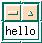
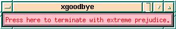

By unanimous vote, the final exam will be in the last class. It is required; don't leave town before it.
X runs well on Linux. The only problem is that Motif is a commercial package that costs money. There is a free clone called LessTif, which appears to do my class programs well. In fact, I'm gradually switching to LessTif from X/Motif of the SGIs.
I don't know of any versions of X that run on top of Windows, other than tools for remote logins like Exceed. One difficulty with implementing X on top of Windows is that X is more powerful in areas such as the color map. Anyone with info about this please tell me.
X/Motif works on the RCS SGIs, Suns, and IBM RS6000s. I recommend the SGIs. They are faster. X is better integrated into them; you need fewer stitches when compiling.
.bashrc file.
(.bash_profile is not read if you use the
session manager, which is used when you login locally,
but not remotely.) export XUSERFILESEARCHPATH=%N.ad:$XUSERFILESEARCHPATH
Note that, in bash, the shell that you're probably running, the standard way to set an envar is
export VAR=value
setenv is a function, which you can see
with type setenv, designed to provide
compatibility for csh users. setenv does export
VAR=value.
cp /dept/ecse/graphics/Classes/02/Makefile .
I have Makefiles, which sort-of work, for the Sun and IBM platforms.
Makefile is here.
cp /dept/ecse/graphics/Classes/02/xhello.c .
xhello.c is here.
.ad
. xhello doesn't have one; but if it did, the
classname is XHello, so the file would be XHello.ad
. make xhello
xhello . I recommend that you ignore this section, but since some people ask...
This method is used for distributing large portable X
programs, such as the X system itself. It is so complicated, and
requires a separate directory and Imakefile for each
program, that I don't recommend this method. However, if you wish
to use it, see how it works for xhello in /dept/ecse/graphics/Classes/02/xhello.dir/
.
This is about the simplest possible X program. It just does this:  The source is here.
This puts a message in a pushbutton widget, like this.

Pushing it kills the program. It also reads the text and colors of the widget from a separate, resource, file. xgoodbye is here.
The resource file is here.
For more info on make, see Prof Franklin's page on the subject.
This is enrichment material, which will not be examined.
The intro man page for X, which contains a good summary is here. I formatted it thus on a Sun. Your milage may vary, e.g., the SGIs don't seem to have ptroff.
ptroff -t -man /campus/X11/R6/core/1.0/sun4c_41/man/man3/X.3 > X.ps lpr X.ps
A fallback mode is to say nroff instead of ptroff -t. That uses a fixed-width font, suitable for a terminal. Altho the man page has more detail than you need now, much of it, like the resources section, might be interesting.
Enrichment: ptroff and nroff are versions of troff, which used to be the standard text formatting package before LATEX2e was invented. That's why the Unix man pages use it. Troff is the worst programming language that I've ever seen; raw TEX is the second worst.
As stated in the syllabus, it is ok to do them homework in teams and then to submit one homework for the whole team.
Previous Class, Next Class, ECSE-4750 Computer Graphics Homepage
(2 Sept 99)
Copyright © 1998-9, Wm. Randolph Franklin. You may use my material for non-profit education and research, provided that you acknowledge me and preserve this notice.